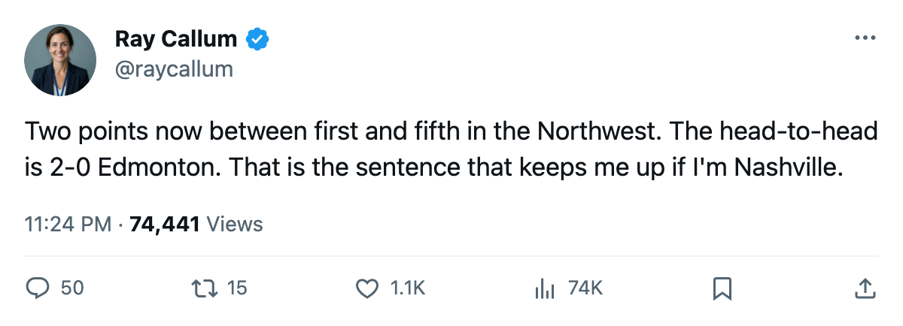
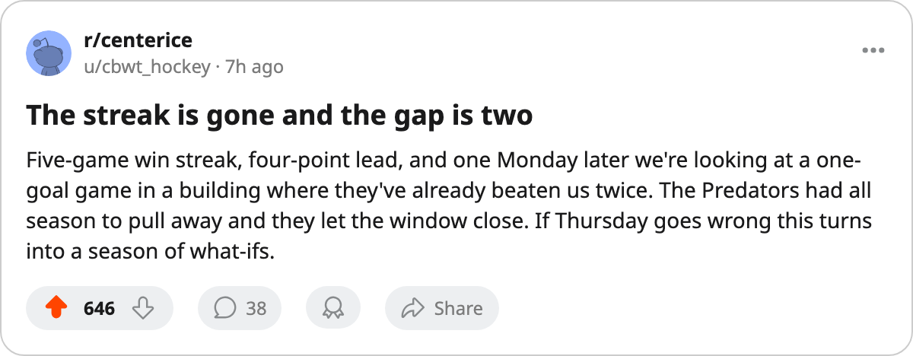

RECAP: Minnesota 3, Nashville 2 -- The streak dies and the gap is two
Nashville led Edmonton by 4. A Monday loss and a Sunday win closed it to 2, and the two clubs play each other Thursday in Nashville.
 Ray CallumSenior correspondent · Home Ice Network
Ray CallumSenior correspondent · Home Ice Network
The piece
The  Nashville Predators lead over
Nashville Predators lead over  Edmonton Oilers was 4 points heading into this weekend.
Edmonton Oilers was 4 points heading into this weekend.  Minnesota Wild won 3-2 at home on Monday, Edmonton Oilers scored 4 past
Minnesota Wild won 3-2 at home on Monday, Edmonton Oilers scored 4 past  New York Islanders on Sunday, and the gap is 2 now. The Oilers visit Nashville on Thursday.
New York Islanders on Sunday, and the gap is 2 now. The Oilers visit Nashville on Thursday.
The Predators came into Monday on a 5-game winning streak. Minnesota, 19-35-7 and 63 points, was riding a 4-game run of its own. The final score was 3-2 on 20 shots for each side at the Xcel Energy Center. Nashville's top center  Greg Johnson81 watched from the room with a knee, out until March 27. Vernon Fiddler75 is done for the season, a groin, return May 12.
Greg Johnson81 watched from the room with a knee, out until March 27. Vernon Fiddler75 is done for the season, a groin, return May 12.
Edmonton, at home, took apart a New York Islanders club that arrived on a 2-game losing streak.  Ryan Smyth82 leads a team sitting 30-21-8 with 92 points. The Oilers have now beaten Nashville twice this season without a loss, outscoring them 8-5.
Ryan Smyth82 leads a team sitting 30-21-8 with 92 points. The Oilers have now beaten Nashville twice this season without a loss, outscoring them 8-5.
Nashville has 12 games remaining; Edmonton, 11. A Nashville win-out reaches 118, an Edmonton win-out reaches 114. The Predators hold the ceiling advantage. But the head-to-head swings the tiebreak that the standings resolve by wins: Edmonton is 2-0 in the season series and can make it 3-0 on Thursday. If they split, it's 2-1 Edmonton, still a lead.
Both teams face the same remaining schedule compression. Nashville travels to  Vancouver Canucks on March 20 and
Vancouver Canucks on March 20 and  Calgary Flames on March 22 before hosting Edmonton again on March 23. Edmonton plays
Calgary Flames on March 22 before hosting Edmonton again on March 23. Edmonton plays  Phoenix Coyotes on March 20 and hosts
Phoenix Coyotes on March 20 and hosts  Washington Capitals on March 22.
Washington Capitals on March 22.
The gap was 4 points on Sunday morning. It is 2 now, with a matchup the Edmonton side has already won twice. If the Oilers take Thursday, the chase is one game wide with eight to ten remaining for each club.

